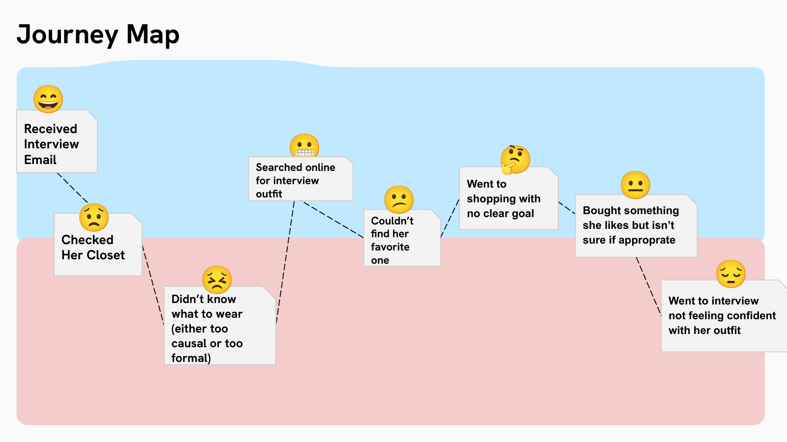
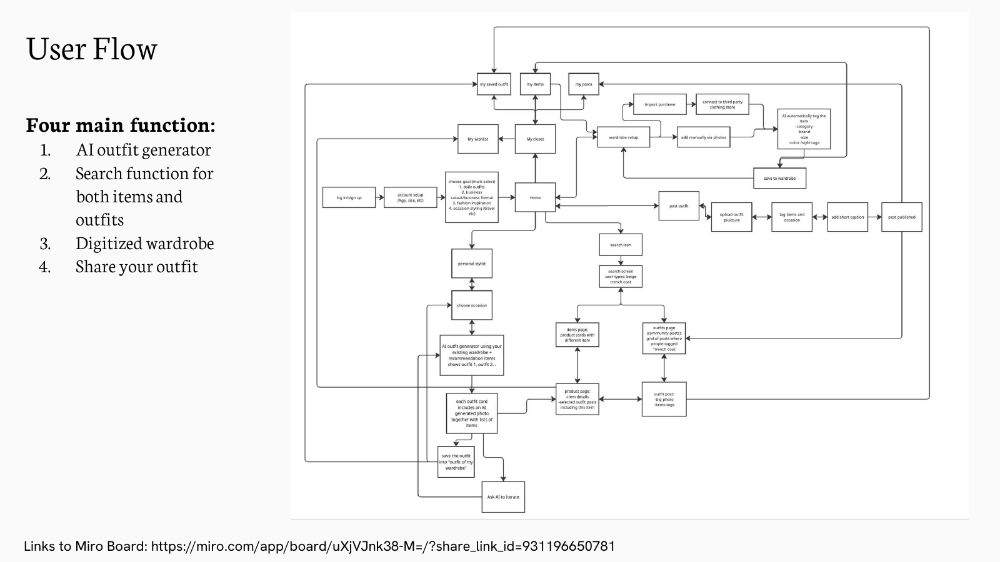
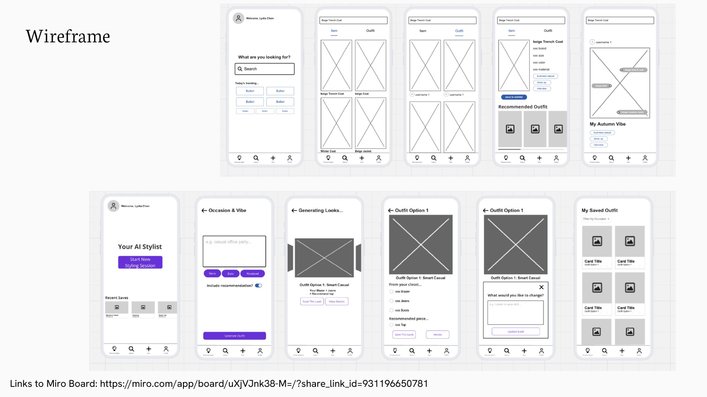
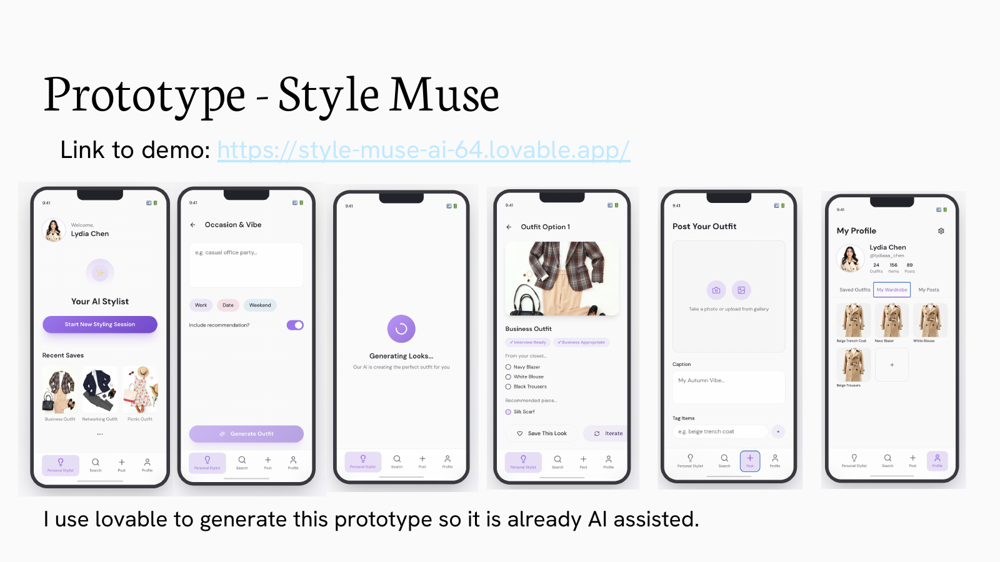

This one started from a problem I actually have: standing in front of my closet before an interview, unsure what "appropriate" even means for that specific room. I validated it wasn't just me by talking to friends first, then ran a semi-structured interview with a target-fit user to ground the concept in someone else's real habits.
Mapping her actual journey — get the interview email, check the closet, search online, shop with no clear plan, buy something she's still not sure about, show up still not confident — made the real problem obvious: it was never a shortage of inspiration. It was the gap between inspiration and her own actual closet, plus genuine uncertainty about what "appropriate" means for a given context.
It was never a shortage of inspiration — it was the gap between inspiration and her own actual closet.
The core flow: choose an occasion, get an AI-generated outfit from your own wardrobe plus recommended pieces, then iterate. I designed wireframes through high-fidelity Figma screens, and in usability review replaced an open-ended text box with guided quick-select iteration options ("try more formal," "try warmer colors"). I also added small "Interview Ready" / "Business Appropriate" tags directly onto outfit cards, specifically because uncertainty about appropriateness was the emotional core of the problem the research surfaced.
Then I built it — not just mocked it up. Using Lovable, I iterated natural-language prompts until the generated product closely matched the Figma high-fidelity design, taking the concept from static screens to a live, clickable demo.



